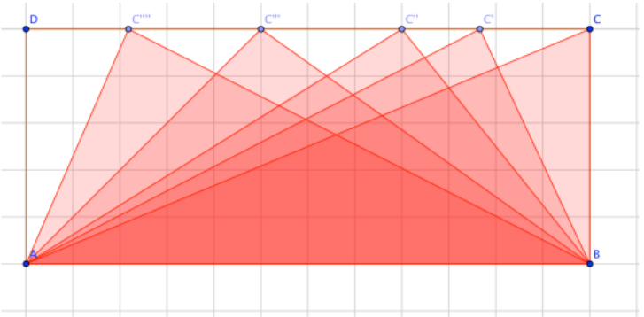

Aufgabe 1.8
Die folgende Aufgabe stammt aus dem Vorgänger des Mathbuch 1, dem Mathbuch 7. Lösen Sie diese Aufgabe und analysieren Sie sie unter dem Aspekt der Kompetenzentwicklung im Lehrplan 21.
- Identifizieren Sie die mathematischen Inhalte der Aufgabe
- Welche Kompetenzen werden bei den verschiedenen Teilaufgaben angesprochen?
- Unterscheiden Sie zwischen Erforschen und Argumentieren
- Überlegen Sie, welche Fehlvorstellungen auftreten könnten
Diese Aufgabe ist vorwiegend der Inhaltsdimension Form & Raum zuzuordnen. Wird die Flächenformel für das Dreieck zum Argumentieren gebraucht, spielt auch Zahl & Variable eine untergeordnete Rolle. Weil Flächeninhalte eine Grösse darstellen, spielt auch dieser Aspekt eine Nebenrolle.
- Richtig. Eine schulnahe Begründung ist hier schon recht
anspruchsvoll aber nicht unmöglich:
Das grösste denkbare Produkt aus Grundseite und zugehöriger Höhe beträgt $5\cdot 12=60$ (woraus ein Inhalt von $30$ resultiert). Jedes grössere Produkt hätte zur Folge, dass das Dreieck den rechteckigen Rahmen sprengen würde. Zudem müssen Grundseite und Höhe paarweise parallel zu den Rechteckseiten sein, damit das Dreieck ins Rechteck passt. Das ist nur dann der Fall, wenn eine Dreiecksseite sich mit einer Rechteckseite deckt. Bei dieser Teilaufgabe geht es in erster Linie um den Kompetenzaspekt Erforschen. Das Ergebnis der Erkundung ist, dass es unendlich viele Lösungen gibt. Allen denkbaren Lösungen ist aber gemein, dass eine Dreiecksseite auf eine Rechteckseite fällt.
- Falsch. Durch eine
sogenannte Scherung lassen sich aus dem oben beschriebenen Dreieck
unendlich viele inhaltsgleiche Dreiecke erzeugen, wobei Grundseite
und zugehörige Höhe gleich lang bleiben (und somit auch der
Flächeninhalt des Dreiecks). Zudem könnte man auch die kürzere
Rechteckseite als Grundseite des Dreiecks nehmen und die längere als
Höhe – ein hübscher Perspektivenwechsel, der die Rollen beider
Rechtecksseiten vertauscht!

Beim Übergang zu diesem zweiten Aufgabenteil verschiebt sich nun die Kompetenzanforderung hin zum Argumentieren, wenn auch das Erforschen noch immer wichtig ist. Die Aufforderung zum Überprüfen kann zweideutig aufgefasst werden. Empirisches Überprüfen meint, alle denkbaren Fälle ausloten und darauf basierend ein Urteil über die Wahrheit einer Aussage fällen. Unmittelbar daran anschliesst die Frage nach dem Warum? Damit sind sowohl erste vage Argumentationsversuche, wie auch formal geführte Beweise gemeint. Diese Grenze zwischen Empirie und Deduktion birgt fast immer ein Potential für mathematische Lernprozesse (vgl. Skript). Nun zu den Antworten und möglichen Argumentationsansätzen, wie sie im Unterricht auftreten könnten.
- Richtig. Vgl. Abbildung bei (b)
- Das ist dann der Fall, wenn das Seitenverhältnis des Rechtecks zwischen 1:2 und 2:1 liegt. Dann ist der grösstmögliche Winkel bei C ein rechter Winkel (Thaleskreis!).
Im Video: Etappe 7 · Lehrplan 21 bei 7:22